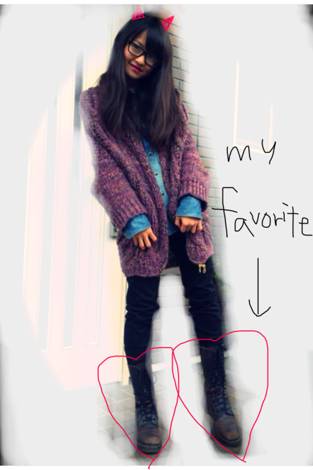
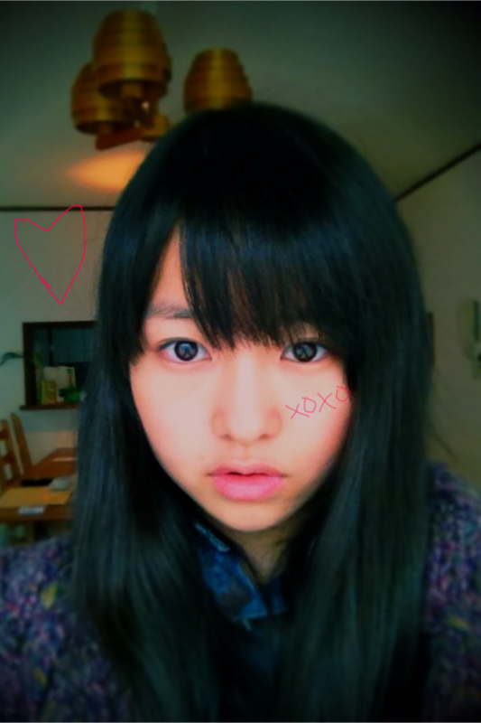
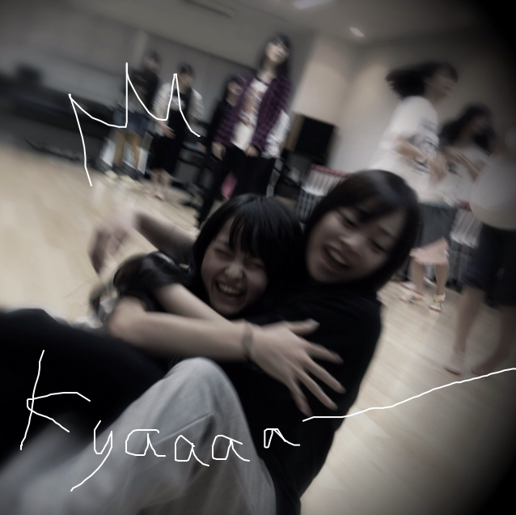
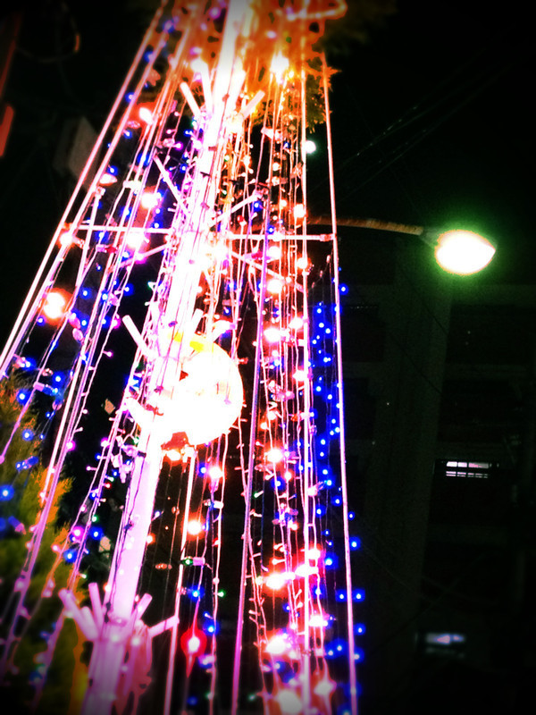
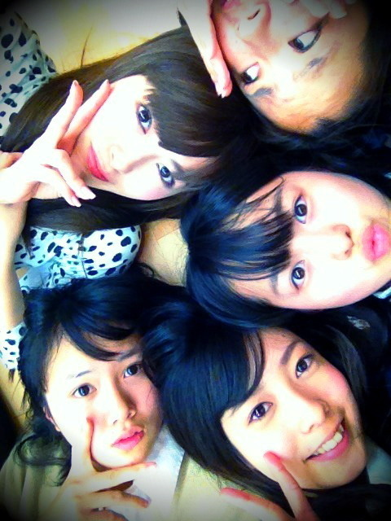
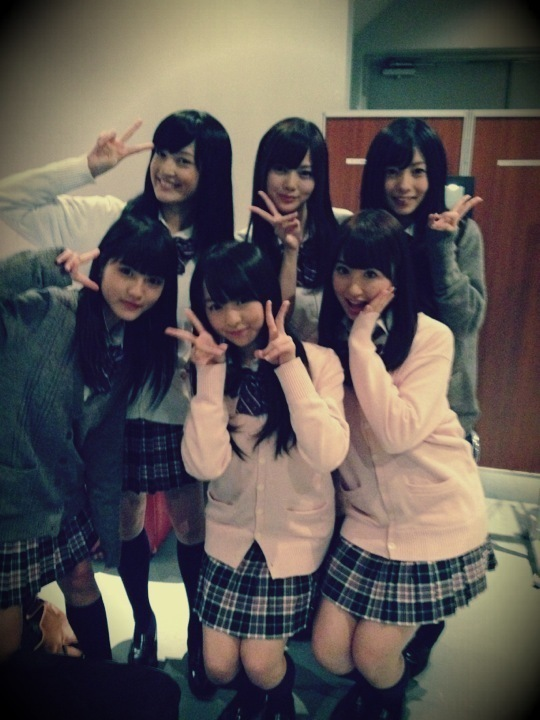
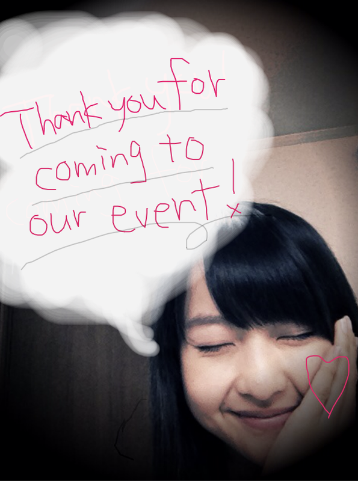
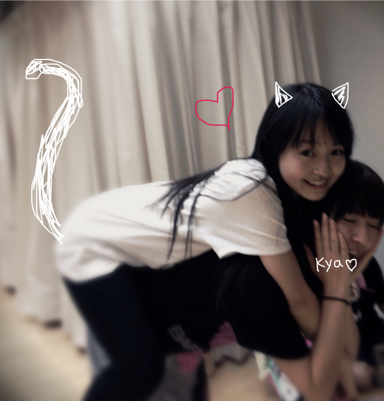
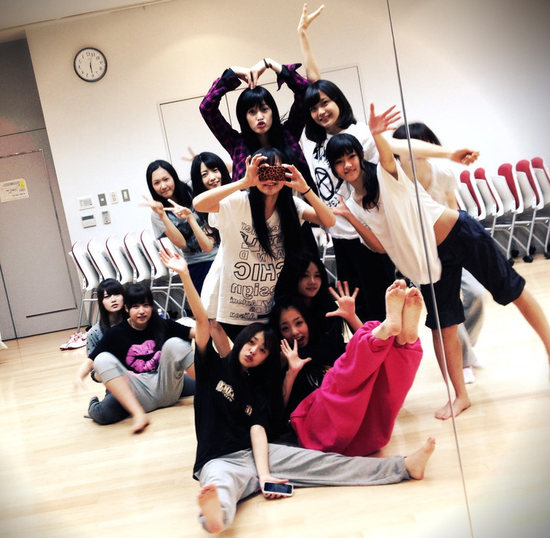

いつも読んでくださってる方、ありがとうございます‼
今日は晴れて気分もらんらんでした。
久しぶりにLesson早く終わりました**!!!!
テスト勉強します~~~~~~。うわ-ん←
そういえば!
30日 イベントin ZEPP東京
めっちゃ楽しみです♪
みなさんにまた会える!うれしいです:D!!
今日は私服載せちゃいます。
この前Lessonでこれ着ていったら
メンバーから評判よかったので........
だだ----ん

こんな感じです。
意外??やっぱり?笑
だぼだぼニット
デニムシャツ
黒スキニー
編み上げブーツ
なんとなくゆるい感じ*
こういうのだいすきなんです。
このブーツめちゃお気にでして
ままのおさがりのDr.Martensです♥きゃわいぃ
歩きやすい。よく履く。
またお気に入りのコーデ載せますね＊
ではでは!
自撮り。(朝撮るのおすすめ!自然光いちばん!←)

テストの日は更新できないかもしれません;(
よろしくお願いします。
ベビたん*****bA by marika
いつも読んでくださってる方、ありがとうございます***
いやぁ!!早いですね。
もう7回目です。
私、いつもパソコンで書いてるのですが
6回目の改行がめっちゃ読みにくかったですよね;
今日も楽しかったな♪
明日もがんばるぞぃ!!
あっ!きいてください!!
この前のDance Lessonでですね、
Tシャツとスウェパン(←スウェットパンツ笑)をですね、
いっつも持ってきてるのに
スウェパンを忘れちゃったんですよぉ!!!!!ぁ-ぁ
で、みんな代わりの持ってきてるかなぁって思って
みんなに聞いたんですけど、
やはり持ってきてなかったみたいで。
しょうがないからスカート履いてやるかって思ったときに
ねねころ(ねね)がやってきて.....聞いたら
「私服のでよければ貸すよ??」って!!!!
のびる素材のスキニーを貸してもらいました。
ねねころ!!かみさまだ~~~~~~＋。＊
って思いました。
感動しました。
すぐ履きました。
ねねころありがと♥感謝感謝!!
ということで、そのときのしゃ-しん♪

はい。ぎゅ-てしたら倒れた笑
きゃ------
今日は雨でじめじめしてましたね。
昨日撮ったのですが

kirakira*****
雨でずっとお家にいらした方
お仕事、学校に行った方
お疲れさまです。
これ見て癒されてください*
もうクリスマスな季節ですね＊
さむいのであったかくして寝てください!!
ベビたん*****bA by marika
やぁやぁっ!!
いつも読んでくださり、ありがとうございます。
今日もlessonでしたでした。
まだ5回目のコメントを見れていませんが、4回目にイベントの感想を書いてくださった方ありがとうございました★*!!
ほんとうにですね...はずかしいんですけどね笑
でもでもでも!!!!!
みなさんが満足したなら安心ですne*♪
さっそく私の声で目は覚めましたかね^^??
私の声でみなさんがやさしい気持ちになれたり、頑張ろう!!って元気になれたなら幸いです!えっへへ←
気分がどよ~ん,しゅんなときは
私の声を聞いてください。
...そろそろしつこいですよね笑すみません!
また会えるの楽しみです<3!!
来れなかった方も早く会いたいよ-----!!
お見立て会、イベントでの声援。
お手紙、プレゼント。
コメント読むたび思います。
ほんとうに感謝の気持ちいっっっっっぱいです!!
........もう。
みなさんだいすきです---------------!!!!!!!!!
すみません。急に言いたくなって///
はい!しゃしん--←

みんなでごろーんしてパシャリ＊まいやん,せいらりん,ゆったん,ろってぃ
ちなみにせいらりんとまりかはすっぴんです笑
いっつもすっぴんぴんです。
たぶん衣装着てるとき以外はすっぴんです。
自分でメイクするとしたら、ちょとマスカラ、チーク、リップくらいかな。
simple is best!
...........................................
質問受け付けます♪
みなさんからの質問にはできる限り答えたいと思ってます!
＊私服
やっぱり私服がボーイッシュって意外ですか?笑
そうですね。CooL系ではなくってメンズっぽい靴とか帽子とか小物を取り入れることが多いです。
『森ガール×ロック＋好きな色』かなぁ。
.....独特な感じだから、すききらいで分かれると思います。
私服見せた方が早いですね笑
いつかお見せします!
＊質問答えるじょい^^!
・まりりん、まりっぺ、まぁちゃん
全部かわいいですね!
どれでもうれしいですよ><*!!
・バレエ以外の習い事
ジャズダンスをちょびっとやってました。
ヒップホップも好きで学校で踊ってました!
・好きなマンガ(アニメ)
少女漫画は小さい頃から読んでます*!
君に届け,ラブコン,ストロボエッジ,チョコミミetc...
ななみんの親戚が椎名さんってきいた時はめっっちゃびっくりしました。えぇぇ-----!!って
・好きなスポーツ
TVでしか見たことないけど、フィギュアスケート見るの好きです*
友達と何回かスケート行ったことありますが、すぐにすってんころりんです。
脚あげるだけだと余裕だけど、滑りながらってめちゃ難しいです。
ねねに教えてもらおうかなぁ~笑
・まりちゃんって呼んでいい？
うれしいです。ぜひ、呼んじゃってください^^*!
・猫or犬、飼うなら？
私どっちもすきなんですよ-!
迷います。猫、犬、猫、犬........
決められない!どっちもすきです。
どっちも飼ってみたい...。
・まりりん
中学のころ呼ばれてましたよ-!
まりりん、いいですね^^*!!
はい!以上ですかね?
こんなんでよろしいかしら*
...........................................
今日はだいぶ長文になってしまいました。
最後まで読んでくださってありがとうございました!
ベビたん*****bA by marika
みなさん。おつかれ様ですッ!!
生声録音会、無事終了しました---------------!!!!!+。＊
イベントを楽しみに待っててくださったみなさん。
お仕事帰りや学校帰りの方
忙しい中イベントに来ていただき
ほんっと---にありがとうございました!!
みなさん、楽しんでいただけましたか??
.....はずかしかったですよね*←
みなさんとの距離も近くて緊張しました。
やっぱりですね.....
録音はいちばん緊張したし、はずかしかった///
かお熱かったです。ふ-ふ-
お話できる時間たくさんありましたが
緊張でうまく話せませんでした~泣
すみませんでした。
そして録音のとき、かんでしまってすみませんでした。
みなさんから応援メッセージを直接いただいて
とても感動しました。
お手紙、プレゼントありがとうございました!!
開けるの楽しみです^^*ふふ
BloGにコメントしてくださった方も
来ていただいて<3!!
ペンネームでわかりました!**

せっちゃん,まいやん,ゆったん,みゅうみゅう,みさみさ
おつかれ様でした---<3楽しかったよ*!
録音したメッセージは大切にしてくださいね★*
ちょいとはずかしいけどね!

今回のイベントは都合があって来れなかった方
外れてしまった方も次は絶対に会いましょうね>
みなさん、ありがとうございました。
これからも応援よろしくお願いします!
ニックネームはみなさんすきなように呼んでください^^
ベビたん*****bA by marika
まりかだよっ。ベビたんだよっ。
いつも読んでくださってる方、ありがとうございます。
.....いよいよ<3!!
＜告白の秋＞***生声録音会***
17日!!!!
うひょ-----------!!
どきどきわくわくです。
みなさんに会うの、とっても楽しみです。
.....変顔...披露するかわかりませんが
みなさんも楽しみにしててくださいね><笑
録音会のメンバーはみんな私よりおねーちゃんなので
緊張でわぁぁってなると思います。
がんばるよ:D!!
ええ声でると思います。きっと
そしてコメントいっぱ---------------いで今日もほかほかでした*^^*
1回目2回目でコメント反映されてないと書いてありましたが反映されてましたよ♪
うれしいです。
みなさんからのあたたかいコメントは何度も読み返してます。
.....................................
＊ニックネームのお話
なぜ「ベビたん」なのか...
それは私が童顔だからさっ!←
もっとちゃんと話すと、ですね。
最初の頃、私前髪なかったんです。
で、おもいきって前髪つくってみよう!!と考え、えいっ!とばっさり切りました。
メンバーに披露したら大好評でして、そのときヤマトマトに「なんか、ベビたんみたい」と言われたのがきっかけです。笑
せっかくメンバーからもらった初めてのニックネームなので、大切にしたいです...*
でも、頭文字とか全く入ってないのでしっくりこないのも分かります。!!
なので、みなさん!!
これからは私のこと、まりかorベビたん のどちらか呼んでください。
その時の気分でよろしくお願いします笑
新しいニックネームもwelcomeです!
＊出身地について
小2まで大阪府に住んでいました。
実は今でも関西弁ばりばりです。←
抑えよう抑えようと思ってたら結果、こんな中途半端な口調になってしまいました。笑
ゆるしてください。
もう長く神奈川に住んでるので一応神奈川県出身です。!
＊髪型
ポニーテールほめてくださりありがとうございました~★
いろんな髪型したいからBloGでときどき載っけるかも!!
今はダウンヘアーでがんばりまぅす!
＊質問答えるじょ-い^^!!
@まりたんは甘えん坊？
...そうですね。うーん.....甘えん坊です!だって１人さびしい;(
@どんな私服着てるの？
なんて言えばいいのかなぁ??
基本ボーイッシュです。(ボーイッシュって言ってもそんなに男子!な格好はしてません><)
ちょっとしたくせのあるデザインには目がいってしまいます<3!!
ダメージとかスタッズとかヴィンテージレースだいすき***
古着すきです。ぼうしすきです。
へへっ!顔に似合わないだろう!! ...私もそう思う笑
@写真の加工は何でしてる？
iphoneの有料アプリを使って加工してます♪
・一眼トイ
・スケッチ
まりたんっていうニックネームかわいいですね*きゅん<3
ありがとうです。
＊いちばん最後のあれ。
最後に「ベビたん*****bA by marika」がありますが
bA っていうのは後ろのbyとくっつけたらbabyになりますよ~♪ってやつです。
気づいた方もいらっしゃいますか??
なんでAが大文字なのか......!??
.......それは、なんとなくです。!!
.......................................
しゃし-----ん!

みさみさにおんぶしてもらっちゃた♪みさみさほんとにおねえちゃんみたいなの!
写真のことなのですが、パソコンの都合上2枚しかupできませ-ん泣
ちょっとずつしか載せれないけど、変わらずよろしくです!

いひひっ。
イベント楽しみましょ-!!!
まってます!*
ベビたん*****bA by marika